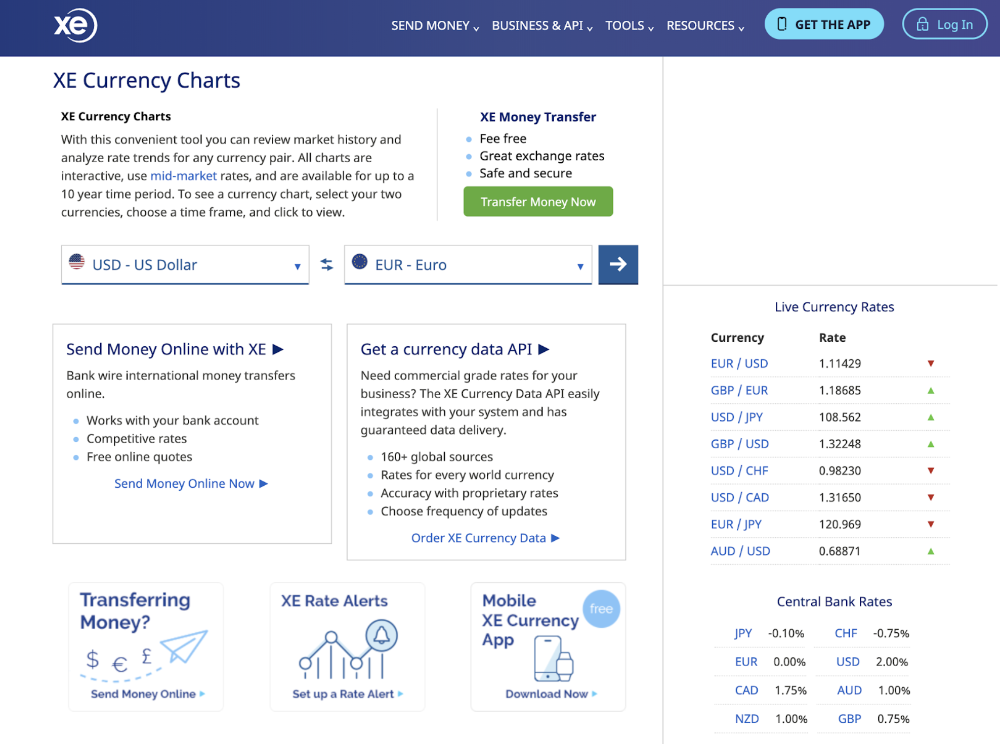

Futuristic Kahoot
Full Stack Engineer
UX Design
As user-centered design is getting more recognition, one of the greatest focus of UX Design these days would be accessibility. “Futuristic Kahoot” is one of my main projects that I aim for a better accessbility.
Kahoot is a game-based learning system that allows users to take quizzes or polls online.
The current version of Kahoot makes users to click an option to respond to questions.
I have always enjoyed using this system, and I imagined how I can improve Kahoot by making it more accessible to a wider range of users.
I came up with an alternative solution by using Webgazer.js library that uses common webcams to infer the eye-gaze locations of web visitors on a page in real time.
According to this solution, users are not expected to click anything to select an option while using Kahoot. They just stare at an option they wish to select for a few seconds.
{kind=link}
After making an initial sketch of our product, I did a walkthrough with other engineers and decided to add a scoring functionality and a comment board.
We believed that this will give users a better understanding of our program and any directions.
Implementation
I mainly worked on the calibration functionality. Because the Webgazer library uses the webcam in the user’s device, the computed eye-gaze locations are not precise.
Therefore, we added a calibration page that automatically transitions into our main game page after making the system more adjusted to the user’s environment.
I built the calibration functionality with jQuery library that automatically triggers each calibration event after one another to not burden users with too many tasks at one time.
{kind=link}
I also worked on eye-gaze selection logic. To compute the eye-gaze location, we took the value of the center of the window, and based on that value, we make our program dynamically divide the window into four quadrants that each represent one answer choice.
Because users can resize the window anytime, we figured that this is a better solution than setting static values to represent each quadrant.
Besides the calibration functionality and eye-gaze selection logic, I created a timer widget that triggers a change in the comment board when a certain amount of time has expired.
Lightweight Currency Converter
Web Application Engineer
UX Design
The problem of most pre-existing currency converters on the market is that they are flooded with extra information as shown in the picture below. Thus, users often need unnecessarily long time to identify their tasks and perform what they are expected to do.

I designed a lightweight solution that enables users to quickly convert currencies or view any changes in exchange rates in a graph.
To automate task of setting the default currency, we parse the IP address of the user and sets the default currency in the dropdown list based on that data.
Because this product carries out functionalities that are related to finance, I believe it is important for the interface to convey an emotion of security, trust, and dependability.
Based on this reason, I chose the color of navy and white as the main UI colors.
Implementation
Our team implemented the exchange rate graph that operates based on user requests using JavaScript, Chart.js, FetchAPI, ES6, and ExchangeRatesAPI.
We also built the currency recommendation functionality by parsing user's IP address using JavaScript, jQuery, XML, and JSON.
{kind=link}
{kind=link}

BADA Website Redesign
Front-End Developer
UX Design
The current website of the Boston Art Dealers Association (BADA) does not fit to the contemporary style standards.
Considering that the main users of the website would be art enthusiasts who are sensitive to styles and aesthetics, I realized that redesigning their website would make the users’ experience more pleasurable.
{kind=link}
{kind=link}
To achieve the purpose of redesign, which is to make the website more fit to contemporary style standards, I focused on making the gallery page more modernistic and visually interesting.
I also designed the motion of the homepage image and the carousel of gallery images to be elegant and smooth to give a more professional feeling to the webiste.
Implementation
After implementing the backbone of the website with HTML and CSS, I changed the gallery to be three-dimensional.
In order to do so, I successfully implemented a 3D carousel for the gallery page using CSS 3D, JavaScript, and jQuery animation that made the website much sleeker and more professional.
Aiden's Music Chart
Front-End Engineer
I created a website where users can search relevant songs by querying any keywords (song name, artist, etc.).
To give a minimalistic look and feel, I only used black and white. Also, I styled the website to look like a retro radio screen, which makes the motion of the query results very interesting and even quite nostalgic.
I implemented this program by using jQuery, HTML, CSS, and JavaScript and successfully integrated my program with Deezer API.
View Project